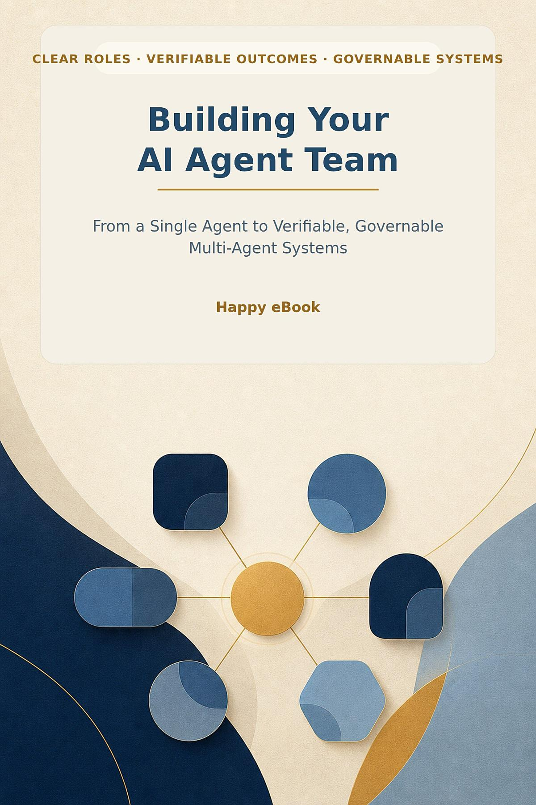

Building Your AI Agent Team
From a Single Agent to Verifiable, Governable Multi-Agent Systems

Building Your AI Agent Team
From a Single Agent to Verifiable, Governable Multi-Agent Systems
AI agents are more than chatbots that generate answers. They can use tools, track state, hand work between roles, and produce results that people can inspect—but only when their responsibilities, permissions, and stopping rules are designed carefully. Building Your AI Agent Team is a practical guide for product managers, software engineers, and technical operators who need to decide when to use fixed code, a single AI agent, or a multi-agent system. Through a research-report workflow, it explains how to define task contracts, structure tool calls and handoffs, manage state and memory, preserve human approval at high-risk boundaries, evaluate quality and reliability, and plan security and operating controls. The book moves from agent fundamentals to role design, evaluation, reliability, APIs, production operations, and an end-to-end system design. It emphasizes a useful principle throughout: add agents only when distinct responsibilities, permissions, parallel work, or independent review justify the extra complexity. No prior multi-agent experience is assumed. Basic familiarity with code, JSON, HTTP/API concepts, and the command line will make the implementation-oriented sections easier to follow. Reader Lab files are referenced separately and are not included in this EPUB. The Codex examples are controlled-session demonstrations; they do not constitute a ready-to-run production orchestrator or service.